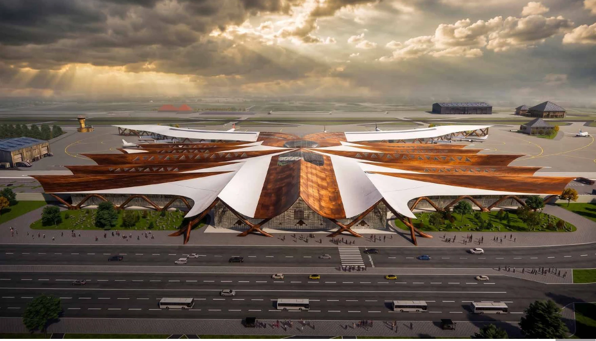
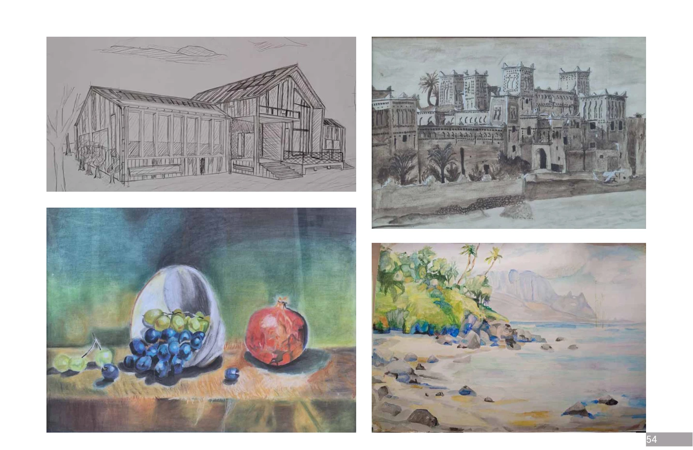

Le territoire.
La matière. La lumière.
Yassir Boukhdimi
Étudiant en architecture à l’ENA de Fès.
Explorer le territoire, comprendre les usages, donner forme aux idées.

Sélection
Des idées ancrées dans leur territoire.
Regards sur l’espace.
Parcours
Les expériences qui construisent un regard.
Observer. Dessiner. Concevoir.
Une architecture attentive
à ce qui l’entoure.
Étudiant à l’École Nationale d’Architecture de Fès, je m’intéresse aux espaces innovants, fonctionnels et adaptés à leur contexte. Mes projets explorent les liens entre paysage, lumière, usages et culture constructive locale.
De l’analyse du site à la modélisation 3D, le dessin nourrit ma réflexion. Les expériences en agence et sur chantier complètent cette approche, au contact des réalités de la construction.
- Agence Urbaine de MeknèsAoût – septembre 2025 · Administration
- Kouchtir ArchitecturesJuillet – août 2025 · Guercif · Agence
- Frouga DesignJuillet – août 2024 · Guercif · Agence
- Kubik Studio ArchitecturesJuillet – août 2023 · Meknès · Chantier
- Cabinet d’architecture et d’urbanisme TalbiJanvier – février 2022 · Meknès · Chantier
Carnet
Observer le monde. Faire naître une idée.
L’œil, la main,
puis l’idée.
Le croquis est un outil de réflexion. Observer les détails, explorer une forme, éprouver une composition : une autre manière de construire le projet.
